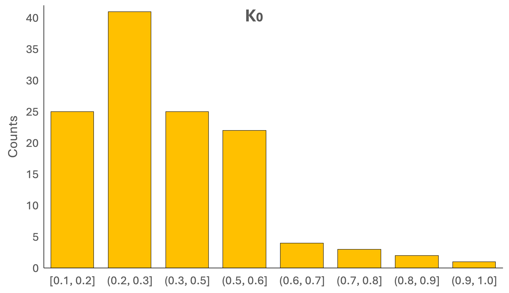
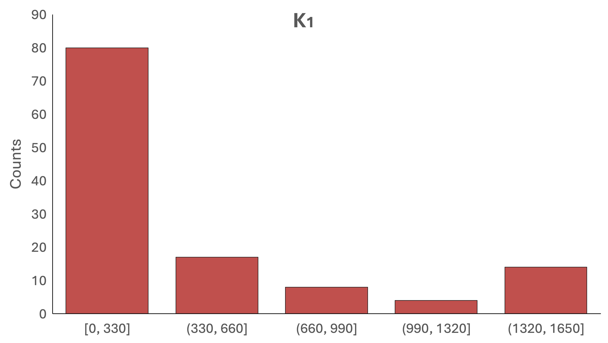
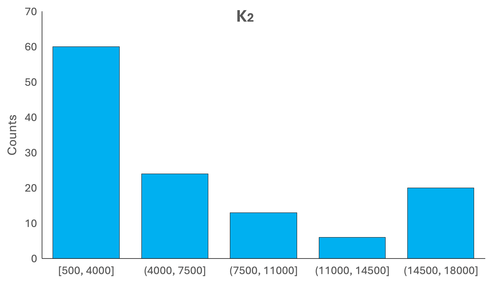

where \(r\) is the prediction accuracy, \(N\) is the sample size and \(T\) is the scan duration. Intuitively, \(K_0\) is the maximum possible accuracy (given infinite sample size and scan time). \(K_1\) and \(K_2\) determine the relative signifance of \(N\) and \(NT\). In the extreme case when \(K_1 >> K_2\), scan duration \(T\) has a much smaller contribution to \(r\) than sample size \(N\). On the other hand, if \(K_2 >> K_1\), \(r\) is essentially determined by the product of \(N\) and \(T\), meaning that \(N\) and \(T\) are largely interchangeble.
The following are the empirical distributions of \(K_0\), \(K_1\) and \(K_2\), generated based on phenotypes across 6 large datasets.
  